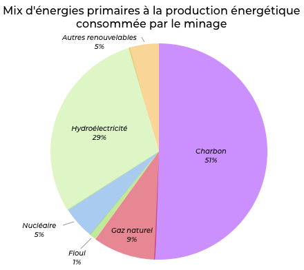

What about its energy impacts?
Selon un rapport de l'Office parlementaire d’évaluation des choix scientifiques, Bitcoin consumption is at least 24 TWh/year, i.e. the total annual production of 3 CP0 and CPY nuclear reactors (the oldest in France) with a production of around 8 TWh.
The cost of public blockchains (including Bitcoin) is estimated to be 46.5 TWh/year and 200 TWh/year.
In comparison, France's annual energy consumption is 530 TWh/year. The blockchain would therefore represent between 8.68% and 37.74% of French energy expenditure if mining farms were exclusively located on French soil. However, 60% of mining farms are located in China, where most of the energy production comes from coal. This is a major ecological problem that is causing considerable damage to the development of Blockchain technology.
In addition, Bitcoin currently operates about 80 transactions per minute, while Visa and Mastercard execute nearly 100,000 transactions per minute. This energy cost is therefore staggering when compared to other centralized alternatives. This comparison is all the more shocking when the majority of resources are wasted during the process of checking invalid blocks.
These figures should be handled with caution because the estimate of the energy consumption of blockchains is not reliable, as the equipment is constantly evolving and miners are careful not to communicate their electricity consumption.
In Iceland, Genesis Mining reported in Business Insider in 2015 that it was one of the most energy-intensive companies on the island, with an electricity expenditure of around $60 per "extracted" bitcoin. That is, at the current Bitcoin price, a remuneration of $6243.99 per Bitcoin extracted.
The energy mix of Bitcoin production reveals a massive use of fossil fuels. But also Hydroelectric, renewable.

Source: Energie Sia Partners